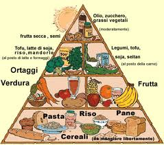

VEGETARIANI E VAGANI

Il vegetarianismo (detto anche vegetarismo) è un regime alimentare che prevede l'utilizzo di vegetali (cereali, legumi, frutta e verdura) e l'esclusione di carne e pesce, con l'inclusione di latticini e uova